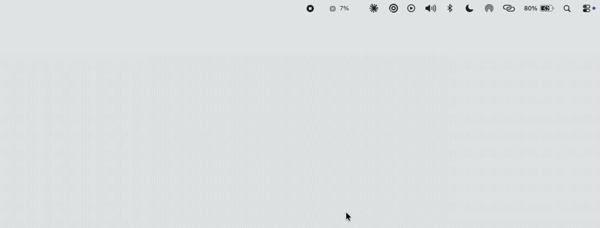

Your Mac's vital signs, in the menu bar.
Download for macOSmacOS 14 or later · Apple Silicon and Intel · free and open source

Load per core and per performance tier, read straight from the kernel.
App, wired and compressed, reconciled with Activity Monitor.
Capacity and throughput, with APFS containers counted once.
Utilization and memory in use, per device.
top, vm_stat, powermetrics and Activity Monitor.